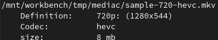

Manual¶
Name¶
mediacurator
Synopsis¶
mediacurator <command> [options]
mediacurator [list convert] [-del/--delete]
[-i/--inputs any 3gp asf avi divx dv f4v flv gif m2ts m4v mkv mov mp4 mpeg mpg mts ogm ogv rm swf ts vid vob webm wmv]
[-fl/--filters fferror old lowres hd 720p 1080p uhd mpeg mpeg4 x264 wmv3 wmv]
[-o/--outputs mkv/mp4 x265/av1]
[-p/--printop list formatted verbose]
[-d/--dirs "/mnt/media/" "/mnt/media2/"]
[-f/--files "file1.ext" "file2.ext"]
Available commands: - list: List all videos with specified filters. - convert: Convert videos to specified formats.
Options:
-del or –delete: Delete found results after successful operations. Use with caution.
-i <input> or –inputs <input>: Specify input file formats (default: any).
-fl <filter> or –filters <filter>: Apply filters to the selection of videos.
-o <output> or –outputs <output>: Specify output formats (default: mkv, x265).
-p <print_option> or –printop <print_option>: Set print options (default: list).
-f <file> or –files <file>: Specify files to process.
-d <directory> or –dirs <directory>: Specify directories to process.
For multiple files or filenames, use space-separated values ( ).
Default options (if not specified):
-i/–inputs: any
-fl/–filters: (none)
-o/–outputs: mkv, x265
-p/–printop: list
Description¶
mediacurator is a Python command-line tool designed to manage a media database. It allows you to:
List all videos and their metadata, optionally filtered by specified criteria.
Batch find, repair, or convert videos with encoding errors.
Batch recode videos to modern codecs (e.g., x265, AV1) based on filters (e.g., container, codec, resolution).
Options¶
list¶
Search and list videos filtered by the user-provided parameters.
convert¶
Search and convert all videos filtered by the user-provided parameters.
–delete¶
Short form: -del
Deletes the original videos after successful completion of operations (e.g., conversion or listing). Use with caution.
See Warnings
–inputs¶
Short form: -i
[any, 3gp, asf, avi, divx, dv, f4v, flv, gif, m2ts, m4v, mkv, mov, mp4, mpeg, mpg, mts, ogm, ogv, rm, swf, ts, vid, vob, webm, wmv]
Filters videos by file format (container extensions). The default is any, meaning all formats are included.
–filters¶
Short form: -fl
[fferror, old, lowres, hd, 720p, 1080p, uhd, mpeg, mpeg4, x264, wmv3, wmv]
Filters videos based on specific criteria:
fferror: Select videos with encoding errors (see Errors)
old: Select videos using outdated codecs (anything except hevc or av1)
hd: Select videos in HD (720p, 1080p, UHD)
lowres: Select videos that are not in HD
uhd: Select Ultra-HD videos (width or height >= 2160)
1080p: Select Full-HD videos (1440 <= width < 2160 or 1080 <= height < 2160)
720p: Select HD videos (1280 <= width < 1440 or 720 <= height < 1080)
sd: Select standard-definition videos (480 <= height < 720)
subsd: Select substandard-definition videos (height < 480)
mpeg, mpeg4, x264, wmv3, wmv, vob: Filter by video codec
–outputs¶
Short form: -o
[mkv/mp4, x265/av1]
Specifies the output format for video conversions:
mkv: (Default) Package the output video in a Matroska container.
mp4: Package the output video in an MP4 container.
x265 or hevc: (Default) Encode the video using x265 (HEVC).
av1: Encode the video using AOMedia Video 1 (AV1).
–printop¶
Short form: -p
[list, formatted, verbose]
Specifies how the output should be displayed:
list: (Default) Prints video info in a concise, single-line format.


formatted: Prints video info in a more readable format with line breaks.
verbose: Prints the FFmpeg output during conversions.
–dirs¶
Short form: -d
[“/mnt/media/”, “/mnt/media2/”]
Specifies directories to scan, separated by spaces.
–files¶
Short form: -f
[“/mnt/media/video.avi”, “/mnt/media2/video2.mp4”]
Specifies individual video files to process, separated by spaces.
Examples¶
# This command lists all videos in the specified directories that use old codecs and
# formats the output.
mediacurator list --filters old --printop formatted --dirs "/mnt/media/" "/mnt/media2/"
# This command converts all MPEG4 videos found in the specified directories to AV1 format
# in MP4 containers and deletes the originals.
mediacurator convert --delete --filters mpeg4 --outputs av1 mp4 --dirs "/mnt/media/" "/mnt/media2/"
# This command converts AVI or MPG videos, displays detailed output during conversion, and
# deletes originals.
mediacurator convert --delete --inputs avi mpg --printop formatted verbose --dirs "/mnt/media/" "/mnt/media2/"
For more examples, see Use cases
See Also¶
Glossary¶
Codec: A program or device that compresses and decompresses digital media.
Container: A file format that holds video, audio, and metadata.
UHD: Ultra High Definition, refers to video resolutions of 3840x2160 pixels or higher.
Error Handling¶
Common issues users might encounter include:
Encoding Errors: If videos have encoding errors, they can be filtered using the –filters fferror option.
Unsupported Formats: Ensure that input formats specified in –inputs are supported by mediacurator.

{kind=link}